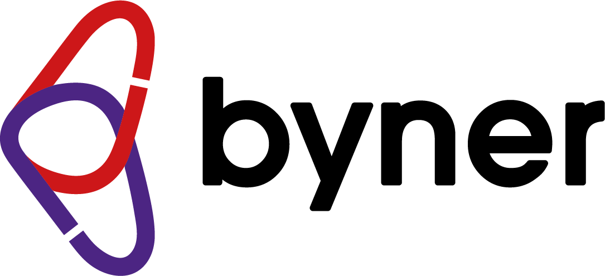

AI Usage CalculatorWat kost AI-gebruik?
Schat het aantal uitvoeringen per onderdeel per maand. De calculator berekent direct je verwachte kosten op basis van de tarieven die de beheerder heeft ingesteld.
Automations
0–200 per maandBatches · CV-databases
0–100.000 cv’sKies hoeveel cv’s je wilt verwerken, per type parsing. De schaal loopt van 0 tot 100.000 cv’s met stappen van 100; voer desgewenst een exact aantal in. Je kunt ook een exact aantal invoeren.
Batchprijzen volgen de tarieven van de beheerder. Een Batch API-korting geldt uitsluitend wanneer de verwerking daadwerkelijk via de Batch API verloopt.